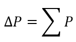
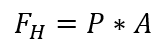
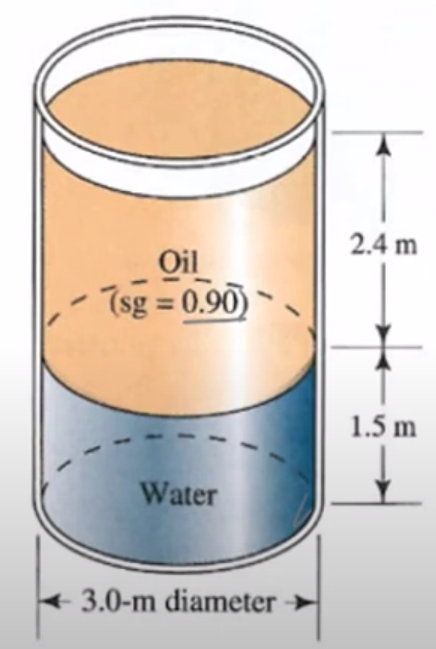
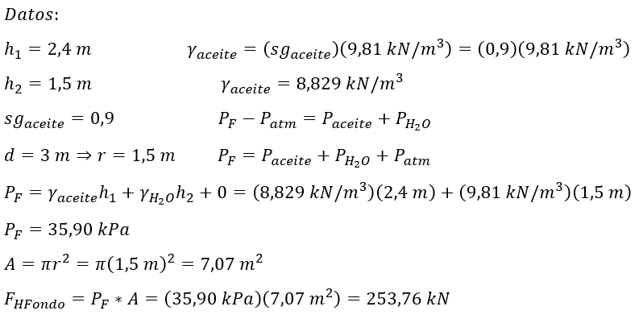

Si las partículas de fluido no están en movimiento no hay fuerzas tangenciales actuando sobre ellas. Consideremos un volumen de líquido sobre la superficie terrestre. Si de ese volumen aislamos otro más pequeño, V', sobre éste actúan sólo fuerzas perpendiculares a la superficie: las fuerzas debido a la presión que ejerce el líquido.

∑P: Suma de presiones de fluidos [Pa]
∆P: Variación de presión [Pa]

P: Presión [Pa]
A: Área [m2]
FH: Fuerza hidrostática [N]
Ejemplo:
Calcule la fuerza hidrostática en el fondo del tanque cilíndrico.


Respuesta: la fuerza hidrostática en el fondo del tanque cilíndrico es de 253,76 kN.